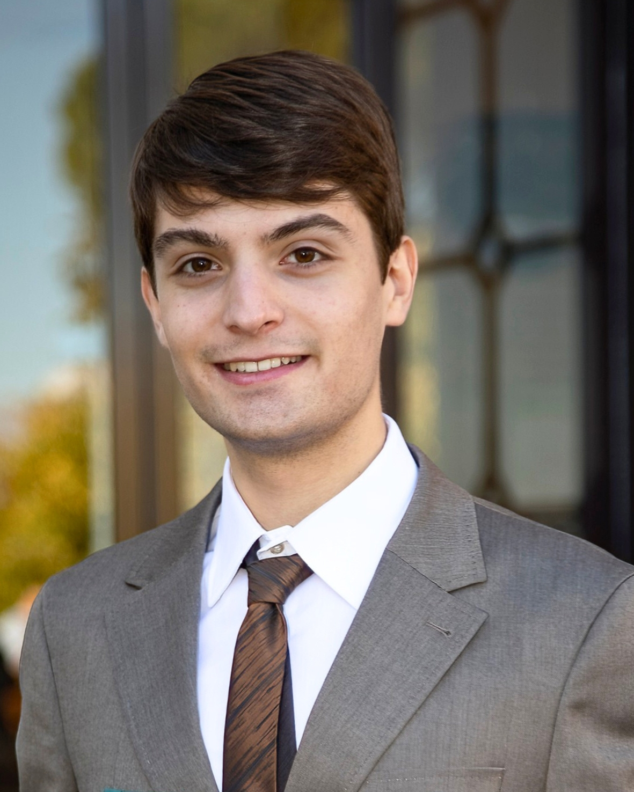
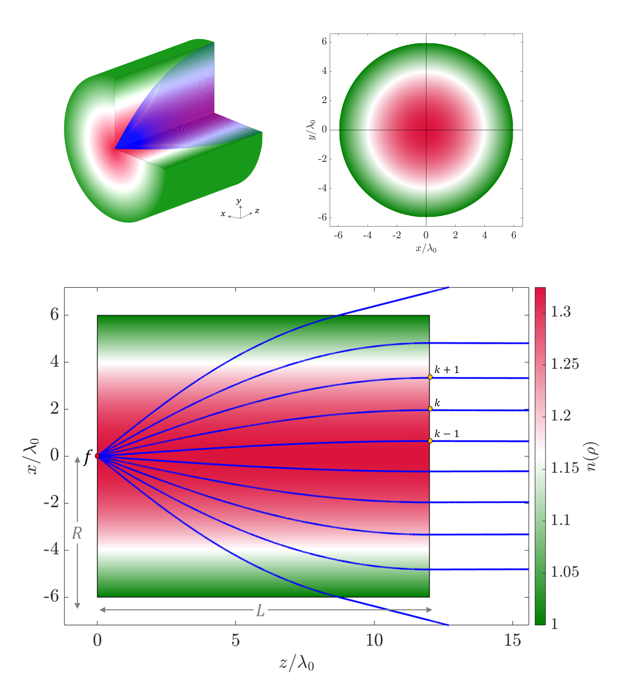

Francesco Berni
Electronics & Communications Engineering.
Master's student in Electronics and Communications Engineering at the University of Siena. Focused on analytical modeling, high-frequency electromagnetics, and telecommunications.
Profile

Francesco Berni
About Me
I am a Master's student in Electronics and Communications Engineering, holding a Bachelor's degree in Engineering Management with a focus on Information Technology.
During a recent research traineeship at the KTH Royal Institute of Technology in Stockholm, I developed analytical and numerical models for advanced electromagnetic structures. Proactive and adaptable, I thrive in international environments and am eager to contribute to innovative engineering solutions.
Experience & Education
My academic and professional journey.
Work Experience
Research Trainee
Apr 2025 — Jul 2025- Analytical and numerical models were developed and validated for gradient-index dielectric structures.
- Matlab and CST Studio were applied for high-fidelity simulations.
- Attendance at industrial seminars (Ericsson, SAAB, Huber+Suhner, Cellmax, TICRA).
Board Member
2017 — Present- Accounting Management, Social Impact and Fundraising Reporting.
- Project presentation and reporting.
- Social project and management: a collaborative approach to local development (CESVOT course FD231 - 2024).
- Social media and website update and management.
Education
MSc in Electronics and Communications Engineering
2025 — 2027Curriculum: Electronics for Smart Industry (LM-27 Class of Degree in Telecommunications Engineering).
Coursework: Mathematical Methods for Engineering, Statistical Signal Processing, Digital Communications, Analog Circuit Design, Electric System and Green Power Devices, Digital Embedded Electronics for Smart Industry, Microwave Engineering, Bioelectromagnetism and Device Electromagnetic Compatibility.
BSc in Engineering Management
2022 — 2025Curriculum: Information Technology Management (L-8 Class of Degree in Information Engineering).
Relevant Coursework: Linear Algebra, Mathematical Analysis I and II, Foundations of Computer Science, Physics I and II, Probability and Statistics, Operational Research, Dynamic Systems, Electrical and Electronic Systems, Information Systems, Foundations of Telecommunications, Automatic Controls, Optimization Methods, Laboratory of Systems for Efficient Energy Conversion.
Thesis: "High-Frequency Methods for Gradient Index Lens Antenna Design"
Supervisors:
Prof. Alberto Toccafondi,
Prof. Oscar Quevedo-Teruel
Upper Secondary Education Diploma
2017 — 2022International Curriculum: A-Level in Mathematics (Grade B), IGCSEs in English, Mathematics, and Geography (Grades A).
Research & Publications
Analysis of a Mikaelian Lens Using a Simplified Ray-Tracing and Physical-Optics Approach
Francesco Berni, Mingzheng Chen, Francisco Mesa, Oscar Quevedo-Teruel
This paper introduces a novel and time-efficient RT-PO model mapping 2D ray-tracing to 3D far-field physical optics. This enables fast and accurate radiation analysis for azimuthally symmetric GRIN lens antennas, overcoming the intense computational costs of full-wave simulations.

Honours & Awards
SAIHub Fellowship Program
Selected as one of 30 Master's students for an 18-month fellowship. Awarded a merit-based grant and engaged in specialized workshops, corporate networking, and industry collaborations to bridge academic research with enterprise innovation in the AI sector.
Premio America Giovani
Awarded for academic excellence among the top 1,000 university graduates in Italy. Included a certificate of merit presented at the Chamber of Deputies and a full scholarship for an Executive Master.